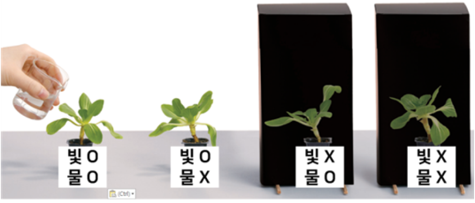

1번
다음은 비생물 요소가 식물의 성장에 어떤 영향을 미치는지 알아보는 실험입니다. 실험에서 같게 할 조건과 다르게 할 조건을 바르게 짝지은 것은?

개요
같게 할 조건
다르게 할 조건
화분의 크기, 물의 양
어둠상자의 크기, 식물의 종류
물의 양, 어둠상자의 크기
빛의 유무, 온도
화분의 크기, 식물의 종류
빛의 유무, 물의 양
온도, 식물의 종류
물의 양, 화분의 크기
빛의 유무, 어둠상자의 크기
물의 양, 온도